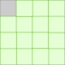
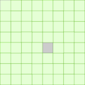

Les triominos#
Un triomino est un assemblage de 3 carrés en forme de « L » comme le montre la figure ci-dessous.
{kind=link}
Les différents triominos de 3 carrés#
Une grille de côté 2 carrés dont on enlève n’importe quel carré peut être recouvert par un des 4 triominos représentés ci-dessus.
{kind=link}
Une grille recouverte par un triomino#
Algorithme de résolution#
Est-il possible de recouvrir la grille de côté 4 carrés par plusieurs triominos sachant qu’on enlève le carré en gris situé en haut à gauche de la grille.
 Une grille à recouvrir de triominos#
Est-il possible de recouvrir de triominos une telle grille quelle que soit la position du carré gris dans la grille ?
On s’intéresse à la grille de côté 8 carrés dont on enlève le carré gris situé au centre comme le montre la figure ci-dessous.
 Une grille de côté 8 carrés#
Donner un algorithme du type « diviser pour régner » qui résout le recouvrement par des triominos de la grille de côté 8 carrés ci-dessus.
Généraliser avec une grille de côté \(2^{n}\) dont un carré de la grille a été enlevé pour la recouvrir de triominos.
{kind=link}
{kind=link}
Programme récursif en Python#
Un programme est fourni dans un notebook pour:
créer une grille vide à recouvrir de triominos
choisir une case grise à ne pas recouvrir
afficher une telle grille une fois recouverte des triominos.
Seule la fonction récursive recouvrir_grille est à compléter. Elle prend en paramètres:
la taille
nde la grille entre 1 et 5,la
grillepréalablement créée avec l’appelG = Grille(n),la
case grisechoisie aléatoirement à la création de la grille,le
sommetde la grille situé en haut et à gauche. Le sommet de la grille initiale est(0,0). Chaque sommet est défini par un tuple.
Le code du notebook à compléter est : d897-2419112.